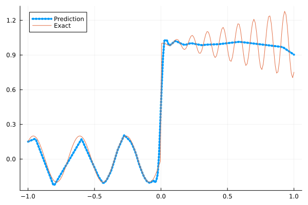
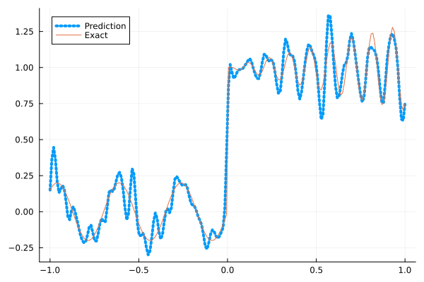
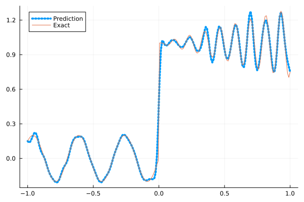
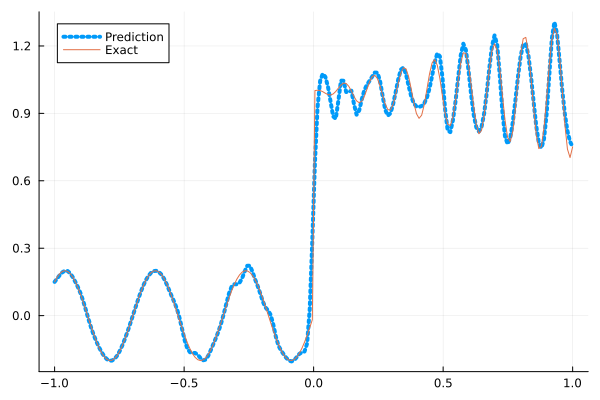
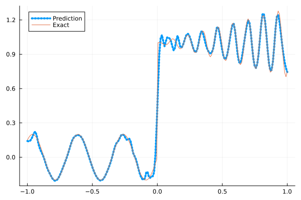

Fitting a nonlinear discontinuous function
This example is taken from here. However, we do not use adaptive activation functions. Instead, we show that using suitable non-parametric activation functions immediately performs better.
Consider the following discontinuous function with discontinuity at $x=0$:
\[u(x)= \begin{cases}0.2 \sin (18 x) & \text { if } x \leq 0 \\ 1+0.3 x \cos (54 x) & \text { otherwise }\end{cases}\]
The domain is $[-1,1]$. The number of training points used is 50.
Import pacakges
using Lux, Sophon
using NNlib, Optimisers, Plots, Random, StatsBase, ZygoteDataset
function u(x)
if x <= 0
return 0.2 * sin(18 * x)
else
return 1 + 0.3 * x * cos(54 * x)
end
end
function generate_data(n=50)
x = reshape(collect(range(-1.0f0, 1.0f0, n)), (1, n))
y = u.(x)
return (x, y)
endgenerate_data (generic function with 2 methods)Let's visualize the data.
x_train, y_train = generate_data(50)
x_test, y_test = generate_data(200)
Plots.plot(vec(x_test), vec(y_test),label=false)
Naive Neural Nets
First we demonstrate show naive fully connected neural nets could be really bad at fitting this function.
model = FullyConnected((1,50,50,50,50,1), relu)Chain(
layer_1 = Dense(1 => 50, relu), # 100 parameters
layer_2 = Dense(50 => 50, relu), # 2_550 parameters
layer_3 = Dense(50 => 50, relu), # 2_550 parameters
layer_4 = Dense(50 => 50, relu), # 2_550 parameters
layer_5 = Dense(50 => 1), # 51 parameters
) # Total: 7_801 parameters,
# plus 0 states.Train the model
function train(model, x, y)
ps, st = Lux.setup(Random.default_rng(), model)
opt = Adam()
st_opt = Optimisers.setup(opt,ps)
function loss(model, ps, st, x, y)
y_pred, _ = model(x, ps, st)
mes = mean(abs2, y_pred .- y)
return mes
end
for i in 1:2000
gs = gradient(p->loss(model,p,st,x,y), ps)[1]
st_opt, ps = Optimisers.update(st_opt, ps, gs)
if i % 100 == 1 || i == 2000
println("Epoch $i || ", loss(model,ps,st,x,y))
end
end
return ps, st
endtrain (generic function with 1 method)Plot the result
@time ps, st = train(model, x_train, y_train)
y_pred = model(x_test,ps,st)[1]
Plots.plot(vec(x_test), vec(y_pred),label="Prediction",line = (:dot, 4))
Plots.plot!(vec(x_test), vec(y_test),label="Exact",legend=:topleft)Epoch 1 || 0.5167117185064432
Epoch 101 || 0.01683623944284897
Epoch 201 || 0.015772147189295847
Epoch 301 || 0.015142062951323724
Epoch 401 || 0.01399694358550213
Epoch 501 || 0.013325521718321283
Epoch 601 || 0.012941548154738153
Epoch 701 || 0.012686676832826512
Epoch 801 || 0.012518189708022306
Epoch 901 || 0.012396985135818252
Epoch 1001 || 0.012320500720093417
Epoch 1101 || 0.012269482235416858
Epoch 1201 || 0.012294433531119097
Epoch 1301 || 0.012214254011294253
Epoch 1401 || 0.01207799385358633
Epoch 1501 || 0.011893351790356799
Epoch 1601 || 0.011046620865098649
Epoch 1701 || 0.01003875338805528
Epoch 1801 || 0.00877538806388094
Epoch 1901 || 0.007899551584406573
Epoch 2000 || 0.007515007504354371
10.290986 seconds (12.81 M allocations: 1.446 GiB, 3.68% gc time, 91.82% compilation time)
Siren
We use four hidden layers with 50 neurons in each.
model = Siren(1,50,50,50,50,1; omega = 30f0)Chain(
layer_1 = Dense(1 => 50, sin), # 100 parameters
layer_2 = Dense(50 => 50, sin), # 2_550 parameters
layer_3 = Dense(50 => 50, sin), # 2_550 parameters
layer_4 = Dense(50 => 50, sin), # 2_550 parameters
layer_5 = Dense(50 => 1), # 51 parameters
) # Total: 7_801 parameters,
# plus 0 states.@time ps, st = train(model, x_train, y_train)
y_pred = model(x_test,ps,st)[1]
Plots.plot(vec(x_test), vec(y_pred),label="Prediction",line = (:dot, 4))
Plots.plot!(vec(x_test), vec(y_test),label="Exact",legend=:topleft)Epoch 1 || 0.8614027830411242
Epoch 101 || 0.0012523770245699809
Epoch 201 || 2.6802899777353528e-5
Epoch 301 || 4.603240897793371e-7
Epoch 401 || 4.227008456780081e-9
Epoch 501 || 2.2768826464924124e-11
Epoch 601 || 5.721534490716069e-13
Epoch 701 || 7.415688610730663e-14
Epoch 801 || 3.067254714921812e-14
Epoch 901 || 4.472009232218913e-14
Epoch 1001 || 2.3706511187423532e-14
Epoch 1101 || 1.7635126850711514e-14
Epoch 1201 || 3.010064240978762e-14
Epoch 1301 || 2.8325954113921868e-14
Epoch 1401 || 5.824328004234962e-14
Epoch 1501 || 4.586765125244858e-14
Epoch 1601 || 7.410476381755142e-14
Epoch 1701 || 4.0839816150324546e-14
Epoch 1801 || 3.318680921908103e-14
Epoch 1901 || 4.3702407983788455e-14
Epoch 2000 || 6.2355078614188e-14
5.090814 seconds (7.67 M allocations: 1.253 GiB, 5.11% gc time, 80.12% compilation time)
As we can see the model overfits the data, and the high frequencies cannot be optimized away. We need to tunning the hyperparameter omega
model = Siren(1,50,50,50,50,1; omega = 10f0)Chain(
layer_1 = Dense(1 => 50, sin), # 100 parameters
layer_2 = Dense(50 => 50, sin), # 2_550 parameters
layer_3 = Dense(50 => 50, sin), # 2_550 parameters
layer_4 = Dense(50 => 50, sin), # 2_550 parameters
layer_5 = Dense(50 => 1), # 51 parameters
) # Total: 7_801 parameters,
# plus 0 states.@time ps, st = train(model, x_train, y_train)
y_pred = model(x_test,ps,st)[1]
Plots.plot(vec(x_test), vec(y_pred),label="Prediction",line = (:dot, 4))
Plots.plot!(vec(x_test), vec(y_test),label="Exact",legend=:topleft)Epoch 1 || 0.37234365905285943
Epoch 101 || 0.0062634215813099515
Epoch 201 || 0.003917929292646155
Epoch 301 || 0.00283568928426966
Epoch 401 || 0.002065786573754865
Epoch 501 || 0.0012943577453601457
Epoch 601 || 0.0005853802042146167
Epoch 701 || 0.0002290713512133835
Epoch 801 || 0.00012845752228961404
Epoch 901 || 9.133982860750812e-5
Epoch 1001 || 7.043907991982797e-5
Epoch 1101 || 5.7077921442045436e-5
Epoch 1201 || 4.8209825333487885e-5
Epoch 1301 || 0.00032621774899864816
Epoch 1401 || 3.787003143321072e-5
Epoch 1501 || 3.44611898916309e-5
Epoch 1601 || 3.218810643357886e-5
Epoch 1701 || 2.9527160446118848e-5
Epoch 1801 || 6.213760055656318e-5
Epoch 1901 || 2.5858865172988114e-5
Epoch 2000 || 2.4278842271393168e-5
0.804730 seconds (1.15 M allocations: 892.483 MiB, 4.43% gc time)
Gaussian activation function
We can also try using a fully connected net with the gaussian activation function.
model = FullyConnected((1,50,50,50,50,1), gaussian)Chain(
layer_1 = Dense(1 => 50, gaussian), # 100 parameters
layer_2 = Dense(50 => 50, gaussian), # 2_550 parameters
layer_3 = Dense(50 => 50, gaussian), # 2_550 parameters
layer_4 = Dense(50 => 50, gaussian), # 2_550 parameters
layer_5 = Dense(50 => 1), # 51 parameters
) # Total: 7_801 parameters,
# plus 0 states.@time ps, st = train(model, x_train, y_train)
y_pred = model(x_test,ps,st)[1]
Plots.plot(vec(x_test), vec(y_pred),label="Prediction",line = (:dot, 4))
Plots.plot!(vec(x_test), vec(y_test),label="Exact",legend=:topleft)Epoch 1 || 0.8675443162667813
Epoch 101 || 0.005427931924330337
Epoch 201 || 0.004547921499356854
Epoch 301 || 0.003938869010192623
Epoch 401 || 0.0018822951209410085
Epoch 501 || 6.753895784150147e-5
Epoch 601 || 1.2052975677380976e-6
Epoch 701 || 2.667446615429758e-7
Epoch 801 || 3.407192765980697e-6
Epoch 901 || 3.894900042399599e-8
Epoch 1001 || 3.877387465238741e-5
Epoch 1101 || 1.2778550626689551e-7
Epoch 1201 || 3.244263237693948e-8
Epoch 1301 || 1.2450755407021476e-8
Epoch 1401 || 5.541893519588245e-9
Epoch 1501 || 1.854162454153018e-6
Epoch 1601 || 6.783905432817353e-9
Epoch 1701 || 3.3910771171330065e-10
Epoch 1801 || 2.1958004550502636e-11
Epoch 1901 || 6.627517667446381e-5
Epoch 2000 || 1.1789572680123157e-8
4.970391 seconds (6.82 M allocations: 1.207 GiB, 4.91% gc time, 76.53% compilation time)
Quadratic activation function
quadratic is much cheaper to compute compared to the Gaussain activation function.
model = FullyConnected((1,50,50,50,50,1), quadratic)Chain(
layer_1 = Dense(1 => 50, quadratic), # 100 parameters
layer_2 = Dense(50 => 50, quadratic), # 2_550 parameters
layer_3 = Dense(50 => 50, quadratic), # 2_550 parameters
layer_4 = Dense(50 => 50, quadratic), # 2_550 parameters
layer_5 = Dense(50 => 1), # 51 parameters
) # Total: 7_801 parameters,
# plus 0 states.@time ps, st = train(model, x_train, y_train)
y_pred = model(x_test,ps,st)[1]
Plots.plot(vec(x_test), vec(y_pred),label="Prediction",line = (:dot, 4))
Plots.plot!(vec(x_test), vec(y_test),label="Exact",legend=:topleft)Epoch 1 || 0.3025323894789548
Epoch 101 || 0.006502072984370336
Epoch 201 || 0.00577326895470337
Epoch 301 || 0.005277645750493612
Epoch 401 || 0.004910393646809975
Epoch 501 || 0.004463132157628284
Epoch 601 || 0.004010025440128306
Epoch 701 || 0.0036722248318048225
Epoch 801 || 0.0032478519576438535
Epoch 901 || 0.0024370292910698118
Epoch 1001 || 0.001035447954359377
Epoch 1101 || 0.00026402604661900217
Epoch 1201 || 6.128144372377472e-5
Epoch 1301 || 4.95157457116386e-6
Epoch 1401 || 1.6112780894111991e-7
Epoch 1501 || 5.1673414774923146e-5
Epoch 1601 || 1.4504450034115943e-8
Epoch 1701 || 0.0003012126260765805
Epoch 1801 || 8.443406107992919e-7
Epoch 1901 || 1.4877389312891684e-6
Epoch 2000 || 4.066529047845595e-5
4.255792 seconds (6.54 M allocations: 1.189 GiB, 5.39% gc time, 84.13% compilation time)
Conclusion
"Neural networks suppresse high frequency components" is a misinterpretation of the spectral bias. The accurate way of putting it is that the lower frequencies in the error are optimized first in the optimization process. This can be seen in Siren's example of overfitting data, where you do not have implicit regularization. The high frequency in the network will never go away because it has fitted the data perfectly.
Mainstream attributes the phenomenon that neural networks "suppress" high frequencies to gradient descent. This is not the whole picture. Initialization also plays an important role. Siren mitigats this problem by initializing larger weights in the first layer, while activation functions such as gassian have large enough gradients and sufficiently large support of the second derivative with proper hyperparameters. Please refer to [1], [2] and [3] if you want to dive deeper into this.